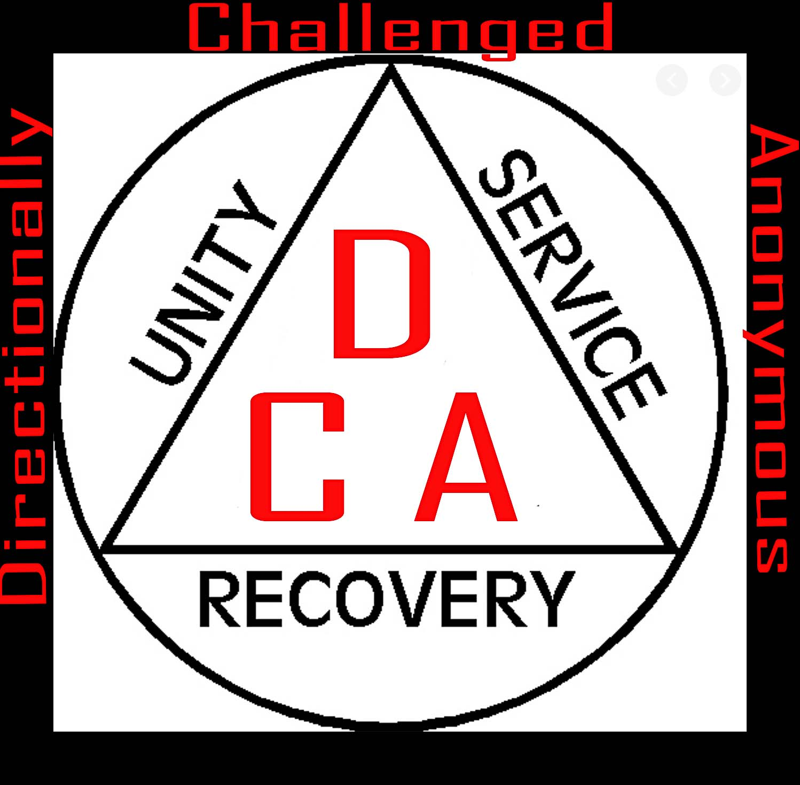
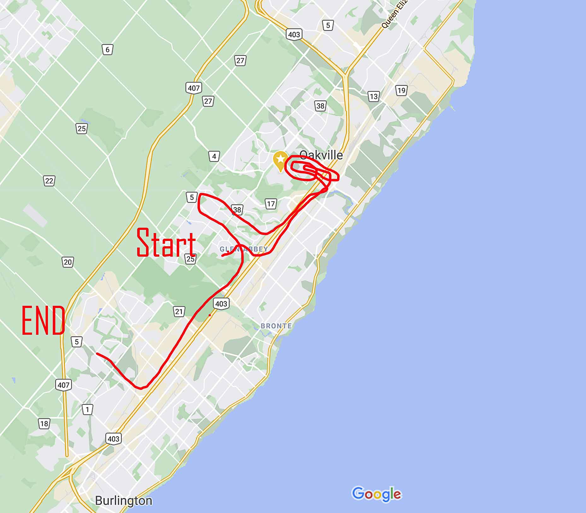
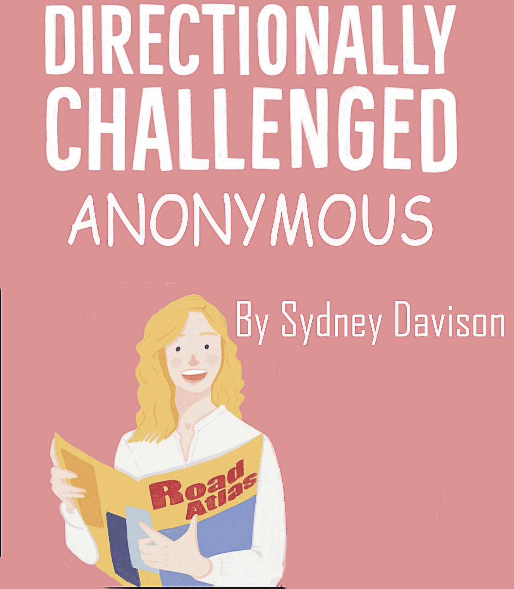

Welcome to Directionally Challenged Anonymous
Hello, my friends. Whether you're concerned about a loved one, a friend, or yourself, you've found your people. We know the unique adventure of turning a five-minute trip into a scenic expedition.

Is DCA for you?
Some of us tried every map, followed every instruction, and still arrived somewhere unexpected. We decided to face our condition with honesty, humour, and the occasional emergency phone call.
The six-question navigation challenge
1. The “How did you get lost?” moment
When someone asks how you managed to get lost, does your explanation require a map, a timeline, and a witness?
2. GPS said what?
Have you been given the exact address, detailed directions, and a GPS—yet the route still looks like modern art?

3. Dress for asking directions
Do you make sure you look your best before heading out, just in case asking a stranger for directions becomes the main event?
4. A GPS for every occasion
Do you use several navigation devices and still struggle with a supposedly simple pickup?
5. Choose your own adventure
When someone asks you to pick something up, do the words “left,” “right,” and “nearby” suddenly lose all meaning?

6. Where is home again?
When someone asks if you know the way home from here, does your face say “I was hoping you did”?
Help is… somewhere around here

Survival guide
Sydney has written a book to help fellow navigational adventurers feel less alone.

You're among friends
No shame in admitting the route got weird. The important thing is arriving eventually.
Keep laughing
Sometimes the best part of the trip is the story you tell after you get there.